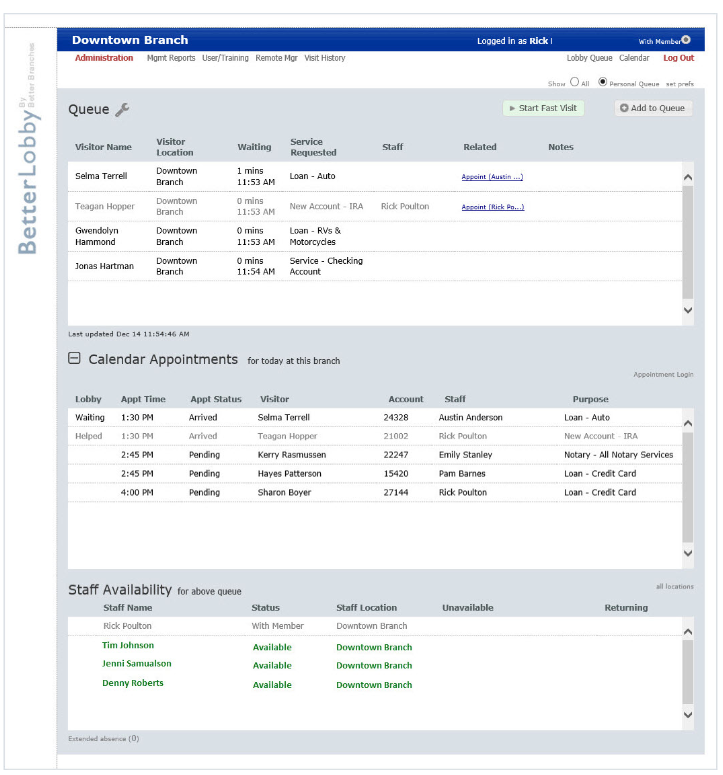
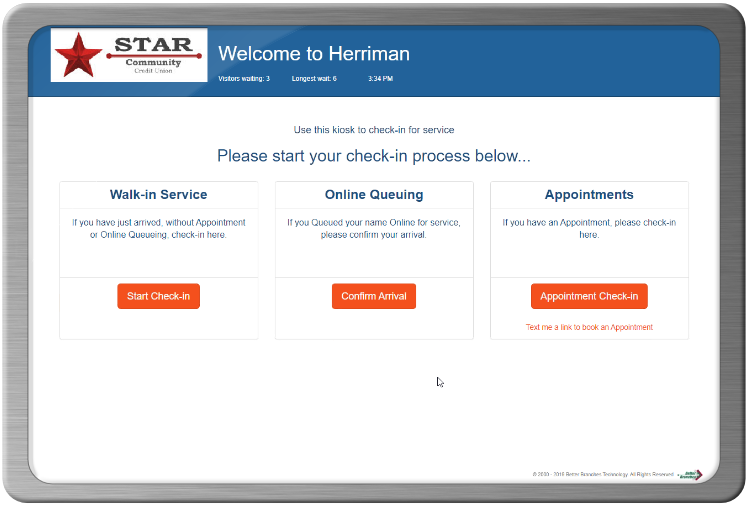

Managing and serving waiting visitors in a retail-style branch requires new tools and techniques — and we can help. Better Lobby makes visitor check-in and service tracking fast and easy, while providing visitors with their position “in line” and management with important information on visits, wait times, services and staff utilization. Better Lobby can also help manage the use of in-branch video technology to connect expert staff to branch visitors — giving even the smallest branch a sales “footprint” that competes with the largest competitors!
Specific areas important for retail-style branches include:
Online Queuing – reduces the time spent waiting, by enabling visitors to place their name in the branch service queue prior to arriving at the branch. (more about online queuing…)
Kiosk Self Check-in - Essential in the retail branch concept to ensure that visitors can queue themselves for service when there is no line to join. Supports both Appointments and Walk-ins.(more about Kiosk…)
Concierge Check-in - easily and quickly queue the incoming visitor on a wireless iPad or Windows tablet computer.
Branch Service Queue Wall Display - provides confirmation to waiting visitors that they are “checked in” and shows where they are in the service queue. Displays appointment time for those that have appointments.(more about Branch Service Queue Display…)
Main Service Queue - visible to all staff (anywhere in the credit union), it displays visitors waiting, being served and the staff available to serve at all branch locations.(more about Main Service Queue…)
Mobile Appointment Booking Tool - makes it easy for members to book an appointment with qualified staff at any branch. Integrates with Better Lobby Appointment Calendar and Outlook to ensure an enterprise-wide view of member appointments. (more about Appointment Booking Tool …)
Branch Video Meetings - overcomes the operational challenge of connecting
For Credit Unions that operate both traditional and retail style branches, the same Better Lobby solution can be used in all branches, reducing staff training and standardizing management reporting.
- Better Lobby Overview
- Traditional & Retail Branch Use
- Modules Overview
- Main Service Queue
- Main Service Queue - Benefits
- Main Service Queue - Features
- Staff Availability & Productivity
- Referrals & Cross-sell Tracking
- Wall Display of Main Service Queue
- Kiosk for Self Check-in and Concierge
- Online Queuing of Visits
- Branch Appointments Modules
- Branch Appointment Calendar
- Mobile Appointment Booking Tool
- Branch Video Meeting Queues
- Solution Cost